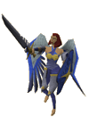
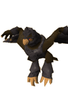
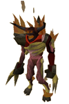
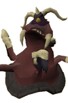

")
Schädelpost 10
Auch Postboten müssen sich ab und zu mal entspannen. Ich spiele z. B. gerne mal eine Runde Karten, um auf andere Gedanken zu kommen. Wenn ihr wollt, könnt ihr meine RuneScape-Duellkarten herunterladen und ausdrucken (s. unten)!
Außerdem gibt uns der Ratgeber von Lumbridge heute Auskunft über seine berufliche Vergangenheit, Hauptmann Cain äußert sich zu dem Verdacht, der Außenposten stecke in finanziellen Schwierigkeiten, und für die Furchtlosen unter euch präsentiert Reldo die 'Hit'parade der 10 stärksten Monster RuneScapes.
Mein lieber Herr Ratgeber von Lumbridge,
als ich vor einigen Jahren zum ersten Mal das Reich von RuneScape betrat, gab es Sie noch nicht. Was haben Sie denn gemacht, bevor Sie Ratgeber wurden? Waren Sie ein Krieger? Oder ein Gelehrter?
Von Tjb1231
Werter Tjb1231,
das ist in der Tat eine interessante Frage. Ich hatte schon viele verschiedene Berufe. Bis auf meine kurze Zeit als Eulenzüchter habe ich meistens im akademischen Bereich gearbeitet. Ich habe Wörterbücher verkauft, Enzyklopädien geschrieben (unter anderem das Kapitel 'G' des Großen Rockhaus) und sogar kurz als Bibliothekar in der Schlossbibliothek von Varrock gearbeitet.
Reldo und ich waren uns leider nicht immer einig. Als ich vorschlug, ein Magie-Katalogsystem einzuführen, wurde er sehr wütend. Daher entschloss ich mich für einem Umzug nach Lumbridge, wo ich mich zu einer Informationsquelle für Reisende etablierte. Ob Sie's glauben oder nicht: Das ist viel weniger stressig, als als Bibliothekar zu arbeiten.
Wir sehen uns!
PhileasHerr Hauptmann Cain - SIR!
Ich hoffe, es geht Ihnen gut, SIR, und Sie können sich die Bestrafer vom Leibe halten! Ich wollte Ihnen ein paar Fragen stellen, SIR! Erstens hat der Außenposten anscheinend schon länger keine Zuwendungen vom Hohen Rat von RuneScape bekommen, SIR. Sind Sie in Geldnot, SIR? Ich will Sie nicht beleidigen, SIR, aber Ihre Raumdeko wirkt etwas heruntergekommen, SIR, und Ihre Magie ist ziemlich veraltet.
SIR! Zweitens, SIR, ist mir ein schreckliches Gerücht zu Ohren gekommen, SIR. Viele der Soldaten, gegen die ich gekämpft habe, behaupten, dass die Eier-Kanone in den Wellen 1-9 das Team Punkte kostet, SIR! In einigen Varianten dieser Geschichte heißt es auch, dass man keine Strafpunkte bekommt, wenn der Sammler die Kanone abfeuert. SIR, bitte schaffen Sie in dieser Sache Klarheit, SIR!
Danke, dass Sie diesen Brief gelesen haben, SIR!
Mit freundlichen Grüßen, SIR!
Gefreiter Rydonmower, SIR!
Ach-TUNG, Gefreiter Rydonmower!
Rühren! Machen Sie 50 Runden um RuneScape - und zwar bis Mittag! Hopp, hopp! LINKS, zwo-drei-vier, LINKS, zwo-drei-vier!
Und jetzt hören Sie mir zu, Sie Schwachmat: Wenn man die Eier-Kanone benutzt, verliert KEINER in IRGENDEINER Welle IRGENDWELCHE Punkte. Und wo wir schon beim Thema sind: Wenn Sie die Kanone nicht in jedem einzelnen Spiel einsetzen, geben Sie beim Kampf gegen die Bestrafer nicht Ihr Bestes. Haben Sie mich verstanden?
Was die Einrichtung meiner Einsatzzentrale im Außenposten betrifft - die ist aus gutem Grund spärlich! Wir sind hier nicht im Urlaub, sondern in einer militärischen Trainingseinrichtung! Während Sie Ihr Geld vielleicht für Bildchen und Zierdeckchen ausgeben, investieren wir unsere Fördermittel lieber in die Wartung unserer Aut-O-Maten und Eier-Kanonen.
Gezeichnet: Hauptmann Cain
Lieber Shantay,
Kennt Ihr mich noch? Ich nehme an, ich stehe ganz oben in Ihrer Verbrecherkartei. Ich wollte mich bei Ihnen bedanken. In den letzten Jahren habe ich Euch und Eure Kollegen als Abkürzung nach Port Sarim benutzt. Ich muss Euch nur sagen, ich wäre ein Bandit - und schon werft Ihr mich ins Gefängnis. Wenn ich mich dann weigere zu bezahlen, komme ich ins sogenannte 'Hochsicherheitsgefängnis' in Port Sarim. Dort muss ich nur meinen Dietrich einsetzen und an dem schlafenden Wächter vorbei (den ich noch nie wach erlebt habe!) und schwupp: Schon bin ich in Port Sarim! Vielen Dank für Eure Hilfe, Shantay. Ihr habt mir meine Reisen durch RuneScape sehr viel leichter gemacht!
Liebe Grüße
Ryan5107s
Einen schönen Nachmittag, Effendi!
Pah, haben diese stinkfaulen Port Sarimer schon wieder während der Arbeit geschlafen? Ich erinnere mich noch an Zeiten, als wir mit Keule und Krummsäbel für Gerechtigkeit gesorgt haben. Jetzt werdet ihr Verbrecher von einem der Praktikanten beaufsichtigt.
Aber Wände, Gitterstäbe, Gefängnisfraß und Gemeinschaftsduschen sind nicht billig. Darum hat man wohl einen schlafenden Studenten ins Gefängnis abkommandiert, an dem jeder mit einer halben Gehirnzelle und einem Dietrich vorbeikommt. So muss Port Sarim keine Gefangenen mehr durchfüttern.
Aber was kann ich dagegen tun? Wenn ich Selbstjustiz ergreife und den Verbrechern die Ohren abschlage, zahlt mir Osman meinen Lohn nicht mehr. Darum locke ich eben Abenteurer in die Wüste und hoffe, dass sie im Rauchverlies oder bei den Kalphiten ein Ohr verlieren. Diese Verliese sind tolle Abkürzungen nach Lumbridge - die solltet Ihr mal ausprobieren! Nein? Ach, ziert Euch nicht so!
Shantay, Hüter des Passes
Lieber Azzanadra,
gibt es noch weitere Mahjarrat, die sich irgendwo verstecken? Wir wissen, dass Sie und Akthanakos von der Außenwelt abgeschnitten waren und Sliske sich im 'Schatten' aufhält. Gibt es noch mehr als neun von Ihrer Sorte? Mein Freund hat behauptet, es gäbe in der Nähe von Falador einen Mahjarrat namens Zeox. Stimmt das? Er soll sich in der Nähe einiger seltsam bemalter Steine aufhalten.
Levitadeus
Lieber unverschämter Sterblicher,
der Name 'Zeox' hört sich nicht nach einem Mahjarrat an. Vielleicht hat einer der Unseren diesen Titel angenommen, weil die Schwächlinge, die denken, Sie regierten die Welt, ihn besser aussprechen können. Ich kann mir aber nicht vorstellen, dass dieser Name außerhalb der Stadt der verblendeten Weißen Ritter viel Anklang findet.
Um Ihre infinitesimal intelligentere Frage zu beantworten: Ich weiß nicht, wie viele von uns auf dieser Welt weilen. Nach meiner Befreiung habe ich den Kontakt zu meinen engsten Verbündeten wieder aufgenommen und meine Helfer ausgesandt, um unsere Feinde zu beobachten. Wir Mahjarrat halten uns jedoch gerne im Schatten auf, und da ich nur die Augen Sterblicher zur Verfügung habe, kann ich meine Stammesgenossen nicht sehen. Viele von uns befinden sich wohl in einem todesähnlichen Schlaf. Mizzarch, Lamistard und Ralvash wurden in den letzten Ritualen geopfert.
Es ist auch möglich, dass einige der Schwächeren aus meiner Sippe sich versteckt halten. Jhallan, zum Beispiel, war schon immer schwach und feige. Kharshai könnte noch am Leben sein, denn ich kann nirgendwo einen Beweis für seinen Tod finden, aber seinen Puls kann ich auch nicht spüren. Vielleicht ist er aufgrund seiner Neutralität ebenfalls in Gefangenschaft gelandet.
Ihr könnt euch darauf verlassen, dass wir noch in vielen Hunderten von Jahren diese Welt bewohnen werden. Vielleicht werden Dutzende anderer Mahjarrat aus fernen Reichen zu uns stoßen, vielleicht werden wir aber auch nur noch zu zehnt sein - jeder von uns aber mächtiger als eine eurer Armeen.
Zu guter Letzt lassen Sie sich gesagt sein: Sliske versteckt sich nicht. Ich wäre nicht zum Feldherr über das Heer meines Herrn geworden, wenn ich nicht genau über die Kräfte derer in meinem Umfeld Bescheid wüsste. Sliskes Taten kann man jeden Tag in jedem kleinen Detail dieser Welt beobachten.
Ehre sei meinem Herrn,
Azzanadra
Aus der Feder von Reldo
Neulich wurde ich in einem Brief nach meiner Meinung als Experte gefragt (auch wenn man mich nicht 'Experte', sondern 'Herr Superschlau' nannte, pff!). Ich sollte die zehn mächtigsten Biester RuneScapes aufzählen. Nach langen Nachforschungen in der Schlossbibliothek von Varrock und Rücksprache mit diversen Abenteurern habe ich die folgende Liste erstellt (die Kreaturen sind nach ihrer Stärke geordnet).
Bitte bedenken Sie, dass die Bezeichnungen 'mächtig', 'Bestie' und 'RuneScape' subjektiv sind und von jedem anders interpretiert werden. Ich veröffentliche hier meine Meinung, die nicht stellvertretend für die Meinung der Einwohner von Varrock oder von König Roald ist.
 Dieses Monster wird meistens nur die Bestie genannt und scheint eine geistige oder körperliche (die Meinungen gehen da auseinander) Manifestation der Seelen der in der Wildnis Verstorbenen zu sein. Ich weiß nicht viel über diese Bestie und selbst das, was ich weiß, muss nicht unbedingt richtig sein. Soweit ich weiß, ist diese Kreatur die mit Abstand mächtigste auf ganz RuneScape. |

TzTok-Jad war bis vor Kurzem eins der stärksten Wesen auf RuneScape. Er ist einem Vulkan entsprungen und wird von den TzHaar, einem Volk von Obsidian-Kreaturen, verehrt. Sein Name bedeutet so viel wie 'Feuer-Elementar aus Obsidian'.
|
|
|
|
 Auf Nummer 3 ist ein Dämon namens K'ril Tsutsaroth, der vormalige Anführer des zamorakischen Heers auf RuneScape. Alle Dämonen haben Namen und sind davon überzeugt, dass ihre Namen ihnen Macht verleihen. Daher geben nur die Stärksten von ihnen ihre Namen bekannt. Diese Dämonen sind dann noch stärker, da schon die Erwähnung ihres Namens die Gegner einschüchtert. |

General Graardor ist ein Ourg. Ourgs gehören zu den mächtigsten der von Bandos gezüchteten Völker und sind eigentlich ausgestorben. Als man jedoch das heutige Verlies der Götterkriege entdeckte, fand man dort den (hoffentlich!) letzten Überlebenden dieses Volks: den General. In den Feldip-Hügeln gibt es auch noch eine zombifizierte Kreatur namens Haudrauf, aber es ist noch ungeklärt, ob die Kreatur mal ein Ourg war oder nur ein abnormal großer Oger.
|
|
|
|
|

Sie ist nicht wirklich eine Bestie, aber dennoch eins der stärksten Wesen auf RuneScape. Genauso wie die Ourgs hielt man auch ihr Volk, die Icyene, für ausgestorben oder im Exil. Man weiß nicht mehr viel über die Icyene, aber ich bin kürzlich in mehreren Büchern auf Berichte über eine Icyene namens Efaritay gestoßen. Ich konnte meinen Quellen aber lediglich entnehmen, dass sie eine Feindin der Vampir-Nation ist. |

Auch Kree'arra findet man im Verlies der Götterkriege, und auch er ist nicht wirklich eine Bestie. Er gehört dem Volk der Aviansie an, dem Lieblingsvolk des Gotts Armadyl. Auch die Aviansie wurden im 3. Zeitalter größtenteils ausgerottet. Die Aviansie scheinen eine Art edelmütige Vogel-Menschen gewesen zu sein, die ihre Verbündeten nach Kräften unterstützt haben.
|
|
|
|
 Erst letzten Wintumber berichtete mir ein Abenteurer von diesem Wesen, mit dem er sich im Kampf gemessen hatte. Der Gleichgewichts-Elementar ist vermutlich ein entfernter Verwandter des besser bekannten Chaos-Elementars, der die Wildnis unsicher macht. Der Abenteurer sagte, dass dieser Elementar zwar sehr stark und gefährlich sei, ihm zuerst aber freundlich gesinnt gewesen war. Er habe sich mit ihm unterhalten, ihn dann aber plötzlich angegriffen. Wie seltsam! |

Der gleiche Abenteurer berichtete mir auch von gepeinigten Dämonen - Kreaturen, von denen ich vorher noch nie gehört hatte. Er sagte, sie wären größer als Blutdämonen und würden sich in einem ständigen Zustand qualvoller Schmerzen befinden. Ihre Haut schält sich von ihren Gliedern und sie fangen urplötzlich an zu brennen. Dadurch sind sie noch böser und gefährlicher als 'normale' Dämonen. Das Portal zu dem Reich, aus dem sie heraufbeschworen wurden, muss sehr schwer zu öffnen gewesen sein. Ehrlich gesagt, habe ich beinahe mehr Angst vor der Macht, die sie nach RuneScape geholt hat, als vor den Dämonen selbst.
|
|
|
|
 Und die Nummer neun der stärksten Bestien RuneScapes ist - genau wie TzTok-Jad - ein Bewohner des TzHaar-Vulkans: Ket-Zek. Sein Name bedeutet so viel wie 'Wachhund' oder ... 'Großer Schmerz'? Hmm, ob diese Übersetzung stimmt? Meine TzHaar-Kenntnisse sind etwas rostig. Egal, jedenfalls ist dieses Wesen ein starker Magier und Nahkämpfer, dem man lieber aus dem Weg geht. |

Der Unzulängliche ist das letzte Wesen auf der Liste, auch wenn der Begriff 'Wesen' etwas hoch gegriffen ist, denn er existiert nur in den Träumen eines einzigen Mannes, der behauptet, er würde regelmäßig mit dieser Kreatur ringen - allerdings nur im Schlaf. Nüchtern betrachtet klingt das ziemlich albern, aber der Mann beharrt darauf, dass seine Geschichte stimmt. Er besucht mich häufig in der Bibliothek, und wir sind gute Freunde geworden. Ich glaube nicht, dass er mich anlügen würde. Dabei fällt mir auf, dass ich ihn schon länger nicht mehr gesehen habe. Hoffentlich geht es ihm gut!
|
|
|
|
Reldo
RuneScape-Duellkarten
Ich habe noch einige alte RuneScape-Duellkarten aus meiner Jugend, aus den Zeiten, als ich noch Arme und mehr Freizeit hatte. Auf diesen Karten sind Reldos zehn Kreaturen abgebildet. Ihr könnt sie herunterladen, ausdrucken und damit spielen. Wenn ich mich richtig erinnere, entsprechen die Werte auf diesen Karten nicht unbedingt denen auf RuneScape. Sie sollten euch aber einen Eindruck vermitteln, wie mächtig sie sind.

Spielregeln:
Ziel des Spiels Die Karten des Gegenspielers zu gewinnen. Der Spieler, der alle RuneScape-Duellkarten besitzt, hat gewonnen.
Spielbeginn Mischt die Karten und teilt sie zwischen euch und eurem Gegner auf. Der Geber macht den ersten Zug.
Spielverlauf Der Spieler, der beginnt, liest einen der folgenden Werte seiner obersten Spielkarte vor: Angriff, Fernkampf, Magie, Gewandtheit oder den RuneScape-Faktor (der anzeigt, wie gefährlich die Kreatur ist). Der Gegenspieler liest nun denselben Wert von seiner Karte vor, sodass die beiden Werte verglichen werden können. Liest der erste Spieler zum Beispiel den Gewandtheitswert vor, muss der Gegenspieler ebenfalls den Gewandtheitswert seiner Karte vorlesen.
Die Karte mit dem höheren Wert gewinnt und sticht damit die Karte des Verlierers. Beide Karten wandern dann ganz nach unten in den Stapel des Gewinners. Der Gewinner liest nun einen Wert der nächsten Karte vor ... Das Spiel wird fortgesetzt, bis einer der Spieler alle Karten gewonnen hat.
Downloads: Karten 1-3 | Karten 4-7 | Karten 8-10
Postboten Peter
| Schickt eure Briefe an |  |

Weitere Artikel in Schädelpost
|
|